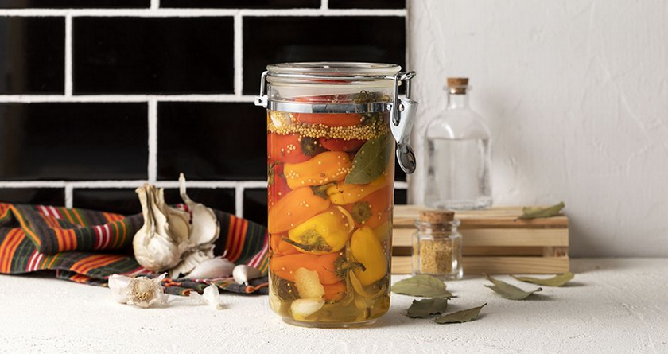

Pickled Peppers

Description
Pickled Peppers are great, but not as great as Pickle Rick!
Ingredients
- 500 g peppers , small
- 3 cloves of garlic
- 1 teaspoons coriander seeds
- 1 bay leaf
- 1/2 lemon, its peels
- 2 tablespoons mustard seeds, yellow
- 1/4 bunch dill
- 500 g water
- 250 g granulated sugar
- 250 g vinegar, white wine
- 1 tablespoons salt
Steps
- Wash the peppers well and, optionally, remove their stems.
- Score the tip of each pepper with a knife.
- Fill a 500 g jar with the peppers.
- Crush the cloves of garlic and add them to the jar along with the coriander seeds, bay leaf, lemon peels, mustard seeds, and dill stems.
- In a pot over high heat add the water, sugar, vinegar, and let them boil for 2 minutes.
- Remove the pot from the heat, add the salt, and whisk until the salt is dissolved.
- Pour the pot’s mixture into the jar until the peppers are completely covered.
- Take a cooking bag -that should be able to fit inside the jar with the peppers- and put some raw legumes in it (for weight).
- Put the bag into the jar and press the peppers with its weight.
- Seal the jar well with its lid and set it aside at room temperature.
- The pickle brine will start getting cloudy. But as the days go by, you will notice that the pickle brine will start becoming clear again. At this point, you can consume the peppers.
- Store the jar in a cool, dry place for about 12 months.
- Once opened, refrigerate it and store it for about 15- 20 days, provided that the peppers are always submerged into the pickle brine.